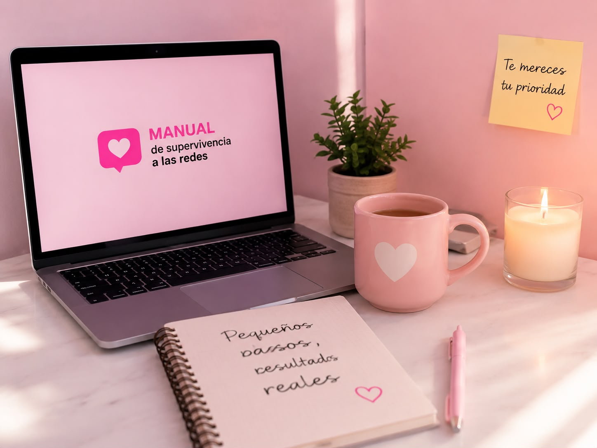

Tu mensaje puede inspirar a otros.
Gracias por ser parte del cambio.
Tu experiencia nos importa. Contanos cómo fue tu recorrido por el manual, qué hábitos reconociste y qué cambios te gustaría empezar a hacer en tu relación con las redes sociales.
Gracias por ser parte del cambio.

Dejamos este espacio para que puedas escribir algún mensaje, consejo, reflexión o idea que quieras dejar para que otros usuarios lean.
Me ayudó a entender muchas cosas que sentía y no sabía por qué. Gracias por compartir tanto valor.
Me gustaría que agreguen más tips para estudiar sin distracciones del celular.
Mis desafíos semanales estarían buenísimos, me motivan mucho los retos.
Me encantaría ver una sección sobre cómo hablar del tema con amigos que no lo ven como un problema.